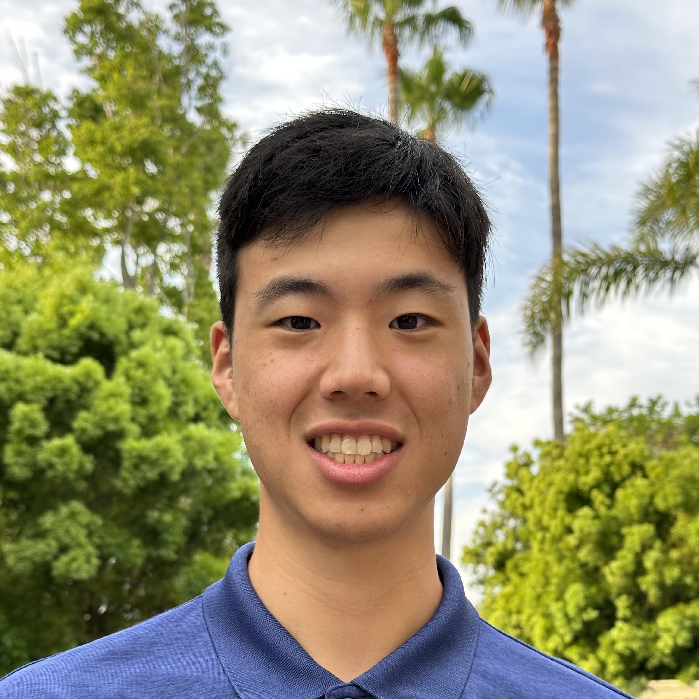

Tyson Sakamoto
Student at UCR

About me
Hi, this is Tyson and wecome to my page! I am a current computer science w/business applications student at UCR. I enjoy cooking,
gaming, basketball, watching sports and esports, and enjoying the outdoors through camping and hiking.
Work Experience
| South East Youth Organization, Scorekeeper |
August 2017 - March 2020 |
| I recorded individual performances and updated the scoreboard for weekly youth basketball games. |
Education
| High School diploma |
Huntington Beach High School |
Fall 2017 - Spring 2021 |
| BS Computer Science with Business Applications |
University of California, Riverside |
Fall 2021 - Present |
Coursework
- Software Construction
- Discrete Structures
- Intro to Data Structures and Algorithms
Skills
- C++
- HTML/CSS
- Python
- Git/Github
Projects